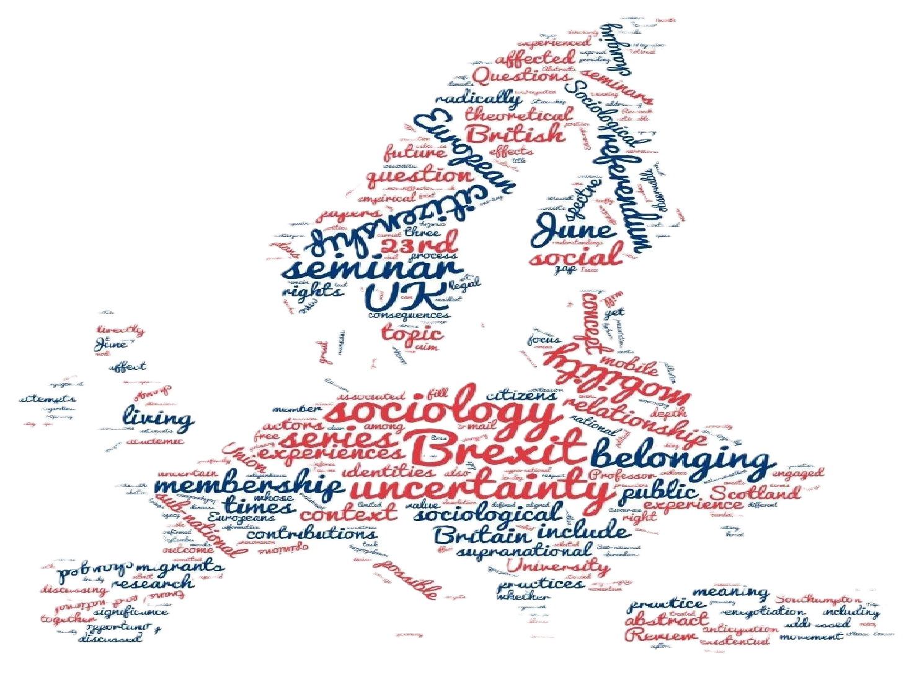

![]()
It’s been more than a year now that the British electorate have voted in favour of the United Kingdom leaving the European Union in a referendum preceded by a heated campaign dominated by the issue of the free movement of people within the EU.

Arguably, as the main differential feature distinguishing it from the ‘neverendum’ dating back to the previous 1975 plebiscite on the question of membership, ‘immigration’ was also a decisive factor in the ‘Brexit’ outcome (as Andrew Glencross has argued in his Why the UK Voted for Brexit, which I reviewed earlier this year).
Although the UK has not yet officially left the European Union – and there is an expectation that the status quo in many aspects of life may remain in place for a number of years after the country’s official departure – there are signs that, at least in respect to popular expectations concerning migration, ‘Brexit’ is already bearing fruit, ahead of season and sweeter than many of those concerned about immigration levels would have expected.
According to Lord Ashcroft’s polls before the referendum, almost two-thirds of prospective ‘Leave’ voters believed that ‘we will never be able to bring immigration under control unless we leave the EU’, while another 22% – those on the real far right of the optimism/pessimism spectrum – opined that ‘we won’t be able to bring immigration under control even if we leave the EU’.
The latest figures released by the ONS, however, have confirmed that net migration has dropped to its lowest level for three years since the referendum result, a decrease attributed by analysts to a growing number of EU nationals leaving the UK . At the same time, applications for British citizenship by EU nationals are reported to have gone up by 80%.
Beyond confirming our own earliest findings from a research project conducted within the ESRC Centre for Population Change at the University of Southampton in the months before the EU Referendum, these trends raise questions at a much deeper existential level, the true level at which a ‘sociology of Brexit’ must operate. Undoubtedly, the socio-political change that will result from Brexit is bound to leave a lasting imprint on the theoretical and ethical foundations of the discipline of sociology as a whole – at least in Europe – requiring us to go in search for more adequate ways of ‘thinking and acting sociologically’. But when it comes to empirical sociology, migration scholars are facing the most immediate need to attempt an understanding of the emergent mechanisms of change, given that ‘Brexit’ was already in the run-up to the EU referendum exerting a disproportionate effect on the lives of the people we were studying.
EU migrants, including those (still) EU-national Brits living in other EU member states, regardless of their personal opinions on the European Union and Britain’s membership thereof (which are probably more diverse than many would have been inclined to think) must ponder their plans for the future well before Brexit actually happens.
Our own survey research on the pre-Referendum migration strategies and plans of Polish migrants – the single largest foreign-born and foreign national group in the UK – has shown that 46% of our respondents ‘felt anxious about the possibility of Brexit’ (i.e. they thought that there was an equal likelihood that Brexit might happen, and that a Brexit vote would affect their and their families’ lives negatively). Those who felt anxious were more than three times as likely to plan to leave the UK in case of a Brexit vote, and 2.5 times as likely to be prepared to apply for British citizenship or for a Permanent Residence document (which, since November 2015, is also required before submitting a naturalisation application), rather than to remain in the UK without taking any action towards legal-civic integration.
Despite the government’s reassurances that ‘there has been no change to the rights and status of EU nationals in the UK, and UK nationals in the EU, as a result of the referendum’, at the level of social experience the change has already occurred, and in the realm of social action steps are being taken.
It was with the aim to explore these experiences and actions in their incipience that a Sociological Review Foundation sponsored seminar series titled The Sociology of Brexit: Citizenship, belonging and mobility in the context of the British referendum on EU membership was run during 2016–2017. The project started off from the observation that the earliest ‘experience’ of ‘Brexit’ was of a public discourse which reinforced a sense of otherness in people who may not have thought of themselves as ‘Others’ before, and that as well as understanding the changes about to happen to people’s legal-political rights and statuses, dealing with Brexit sociologically essentially entails addressing the emotional contradictions of this ‘otherness’.
Many of the posts gathered in this feature of The Sociology of Brexit derive from talks given during this seminar series, capturing the development of their authors’ thinking on a topic which is itself in a constant flux. Some engage more intensively with the macro- and micro-political consequences of the Brexit vote on the lives of EU-national ‘others’, while other contributors delve into the emotional complexities of people’s experiences.
Lulle and King share with their readers the qualitative experience of their research participants’ – Eastern European mobile youths living in the UK – emotionally charged soul-searching upon realising that they ‘are not wanted here’.
Similar anxieties and uncertainties are unearthed by Allen and Young among a peculiar group of EU nationals, Somali-born migrants who, ‘having obtained full EU citizenship status elsewhere’ have migrated to Britain, a country which they perceived as ‘more tolerant of cultural and religious difference’ .
While it is unlikely to resolve emotional complexities, one micro-political field of action available to some EU migrants is to seek inclusion in the national body politic through naturalisation as British citizens. However, as Sredanovic highlights, there may be various administrative difficulties encountered by EU migrants in this respect, many of which are directly related to the flexibility of the legal statuses they previously enjoyed. As he concludes, ‘Brexit is not only demonstrating that the process of European integration is far from unstoppable; it is also reminding us that, behind the exceptions made for EU citizens, states have continued to regulate more strictly the presence and rights of other foreign citizens’ .
Another micro-political field of action besides legal-civic integration is mobilisation against the loss of rights represented by Brexit for many British and EU citizens. In one form or another, Collard, Brändle and her colleagues, and Jablonowski, discuss the political mobilising effect of the vote for Brexit. Collard finds silver lining in that it seems to have ‘triggered a realization amongst many Britons living abroad that leaving the homeland does not necessarily entail a loss of voting rights’, which resulted in ‘a huge increase in the number of overseas electors’ .
Brändle, Galpin and Trenz examine the pro-European mobilisation taking place after the Referendum – ‘a completely new phenomenon in the UK’ – and while they note how Brexit represents the opportunity of a ‘turning point for EU citizenship and democratic representation in the EU’, they are gloomier about the current experience of mobilisation. As their findings suggest, these acts of citizenship derive less from an optimistic outlook than from feelings of misrepresentation, exclusion and alienation.
Focusing more closely on the political mobilisation of those ‘excluded’ on the basis of their non-UK EU passports, Jablonowski’s findings seem somewhat more optimistic. As he argues, ‘a new space for political action and civic engagement opened up once their vulnerability got exposed through the referendum’, which shows that despite being emotionally devastating, the ‘recognition of vulnerability is an important catalyst for claiming, or using, rights’ .
As readers will realise, the stories and cases discussed in these posts are fundamentally about the management of the ‘differences’ and ‘distinctions’ that are being highlighted and exacerbated by Brexit. In their respective contributions, Varriale, and Leith and Sim, look into the past and towards the future of such processes of distinction and their social and political consequences.
Varriale shows how the ‘journalistic and political category’ of ‘EU migrants’ had for long before the EU referendum been fraught with gaping cleavages along socio-economic lines, and argues that ‘the effects of the Brexit, whatever its concrete outcome, will be deeply asymmetrical, and that they will be further complicated by gender, age and lifecourse’ .
Leith and Sim, for their part, remind us that the political game of Brexit has still not been fully played out, and it still has the potential to engender new political and identity-related cleavages within the United Kingdom and among British citizens. These two contributions also remind us that ‘the sociology of Brexit’ existed already before the EU referendum, and will continue to exist after the UK formally leaves the European Union, as fundamentally a ‘sociology of otherness’, a sustained inquiry into the creation and resolution of social difference.
The differentiating feature of the sociology of Brexit, however, should be an increasing bracketing of latent ideological convictions and linear thinking which enforce both an inability to conceive of the possibility of radical change, and at the same time a presumptuous sense of radical novelty compared to times past.
Back to topCitation
@online{moreh2017,
author = {Moreh, Chris},
title = {The {Ongoing} {Legacies} of {Brexit}},
date = {2017-10-06},
url = {https://chrismoreh.com/blog/miscellanea/171006-socrev/},
langid = {en},
abstract = {Reflections on the \emph{Sociological Review}-funded
project “The sociology of “Brexit”: citizenship, belonging and
mobility in the context of the British referendum on EU membership”
one year after the British electorate voted in favour of the United
Kingdom leaving the European Union in a referendum preceded by a
heated campaign dominated by the issue of the free movement of
people within the EU}
}